What changes when observations have temporal structure?
The unifying change
From exchangeable observations to a path through time
TrajectoryWhat happened?
DependenceHow is today related to yesterday?
EventsHow long until something occurs?
PredictionWhat happens next, with uncertainty?
The order of measurements can contain information. Ignoring it may yield overly confident or misleading answers.
Why is time not just another \(x\)-variable?
Two scatter plots may look equally convincing
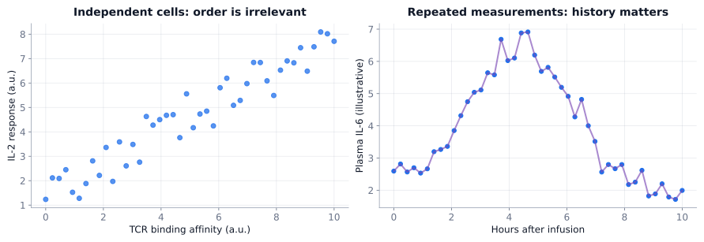
For independent cells, the order is arbitrary; for successive IL-6 measurements from a patient, order is part of the experiment.
Longitudinal versus time-series data
LongitudinalMany subjects; each may be measured repeatedly at several visits.
Time seriesOne process observed in order; adjacent observations can be dependent.
BothTemporal dependence, irregular sampling and missing visits need attention.
Repeated measurements do not logically imply autocorrelation, but they often do in biomedical settings.
Longitudinal data can be handled with repeated-measured ANOVA, but modern applications use mixed-effects regression modeling.
Nan Laird
James Ware
Three common response shapes
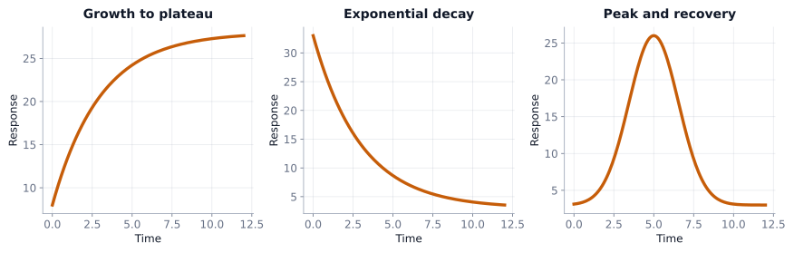
Growth toward a plateau · elimination/decay · peak and recovery. Each requires different summary questions.
Plot individual trajectories first
Drug A versus Drug B · n = 10 per arm
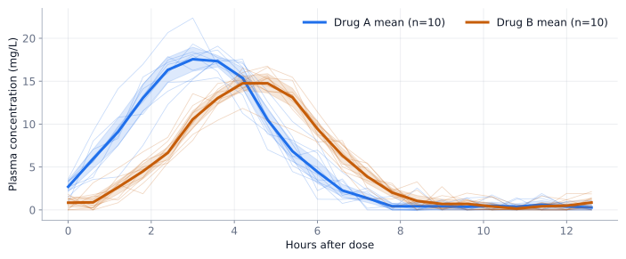
Faint curves are patients; bold curves are sample means; shaded bands illustrate 95% pointwise mean CIs.
Why not six separate \(t\) tests?
Repeated measuresEach person contributes a correlated trajectory.
MultiplicityComparing each time point repeatedly creates many opportunities for false alarms.
Missing patternAn isolated p-value can conceal timing, amplitude and overall exposure.
A scientifically meaningful trajectory-level endpoint can sometimes replace a much more complicated analysis.
Reduce a whole trajectory to interpretable endpoints
Question
Summarize with
Interpretation
Overall exposure
\(\mathrm{AUC}\), time average
Depends on observation window and baseline
Peak response
\(C_{\max}\) / \(C_{\min}\)
Response magnitude
When is the peak?
\(t_{\max}\)
Timing of response
Change / decay rate
Slope or rate constant
Kinetic behavior
How long above target?
Time above threshold
Duration of target attainment
Starting / baseline level
\(C_{\text{baseline}}\)
Initial/final response / reference status
Prespecify endpoints; changing definitions after seeing data introduces bias.
Pharmacokinetics: the shape has meaning
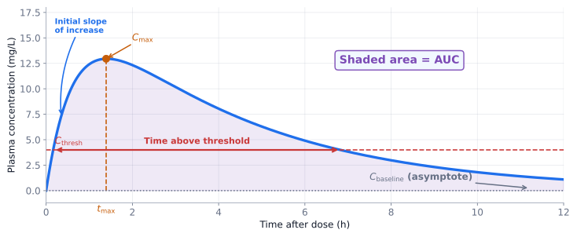
\(\mathrm{AUC}\) = area under concentration versus time; \(C_{\max}\) = peak concentration; \(t_{\max}\) = peak time.
PK quantities should not be confused
AUCTotal concentration–time exposure, not administered dose.
Time above thresholdEspecially important for time-dependent antimicrobial pharmacodynamics.
ClearanceUnder a simple one-compartment model with first-order elimination, \(CL=k V_d\).
The elimination-rate constant \(k\) has units of inverse time. Zero-order and first-order elimination follow different kinetic equations.
An HPLC chromatogram is also time-indexed
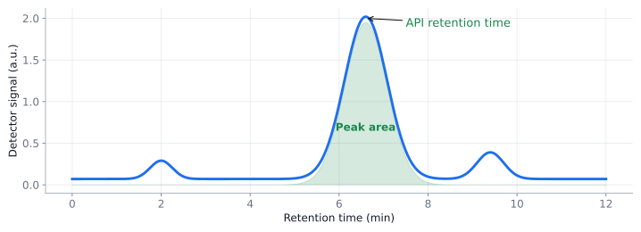
Peak position = retention time; integrated detector response = peak area. Calibration is required to infer analyte amount.
Can we remove time by design?
Repeated blood pressure during one clinic visit
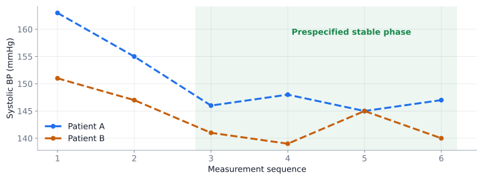
If an acquisition protocol prespecifies a stabilization phase, averaging later readings can yield one patient-level endpoint. Do not discard early values post hoc merely because they differ.
Regression to the mean
Selection on extreme measurements
At screeningA patient is selected partly because of a genuinely high value, partly because of random positive noise.
At repeat testingThe same person often has a less extreme observed value even without effective treatment.
Same selected people remain highlighted. Only their repeat measurement changes; the cohort is not reselected.
Initial selected mean—
Most recent mean—
Selection size—
The placebo-group surprise
ScreenRecruit only people with unusually elevated blood pressure.
Follow upEven without an active effect, their average may decrease on repeat measurement.
InterpretA control arm helps separate spontaneous variation from a treatment effect.
A reduction after treatment alone is not proof that the treatment caused it (SYMPLICITY HTN-3 clinical trial 2011).
Autocorrelation
Part II
Time-series analysis
We now see how we can analyze trends in time-series data.
A fitted time curve can still be useful
RegressionFit a prespecified exponential, logistic or other trajectory.
CoefficientsCompare rate, peak, delay, plateau, or asymptote.
DangerRepeated observations can have correlated residuals.
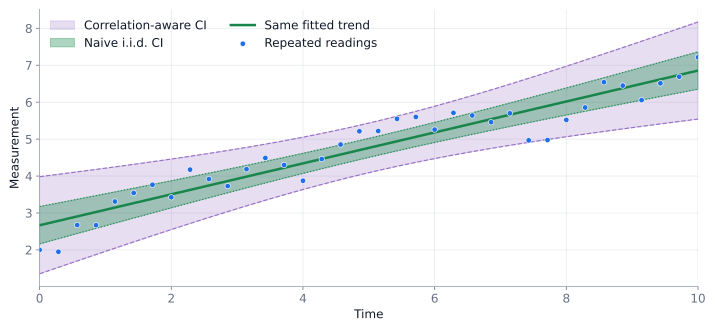
Bands intentionally schematic. The broader band illustrates why independence assumptions can understate uncertainty; actual widths depend on the fitted correlation model.
Correlation changes uncertainty: same trend; different standard-error assumptions.
Autocorrelation means a lag matters
\(\rho(k)=\operatorname{Corr}(Y_t,Y_{t-k})\)
Lag 1The similarity of consecutive values.
Lag 6The similarity of values separated by six time steps.
Differencing\(Y_t-Y_{t-1}\) is a separate transformation, not the definition of autocorrelation.
George Udny Yule
Paul Lévy
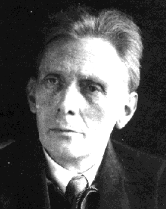
Aleksandr Khinchin
Norbert Wiener
Three contrasting dependence structures
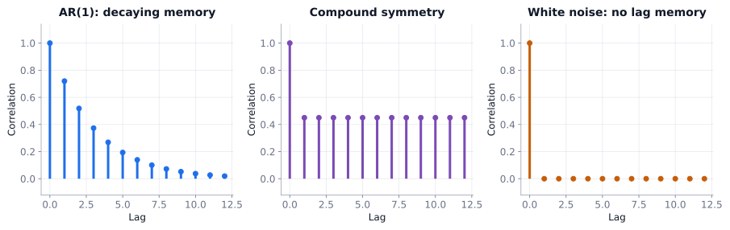
AR(1): correlation decays across lags. Compound symmetry: an illustrative equal within-subject correlation. White noise: no serial correlation.
Examples include
First-order autoregressive: lake water temperature, where recent history has greatest impact on present (short memory)
Small λFit follows data more closely; can appear jagged.
Large λFavors less curvature; approaches a straight line.
Natural boundariesThe second derivative vanishes at the endpoints; slope need not vanish.
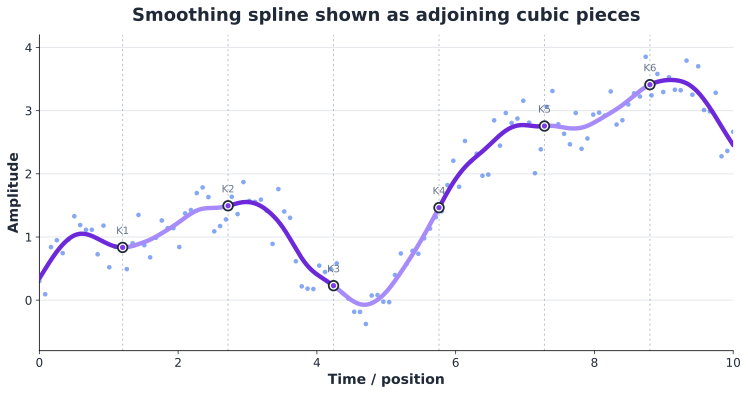
Isaac Jacob Schoenberg
Grace Wahba
Lab: compare smoothing methods on the same data
Spline panel uses a finite-difference curvature penalty, a close discrete analogue; GCV selects its penalty.
Method—
RMSE to truth—
Selected λ—
Filtering asks a different question
SmoothingAttenuate fluctuations locally or by roughness penalty.
Fourier viewExpress the signal as a superposition of frequencies.
FilteringKeep or attenuate frequency ranges, then reconstruct.
A sudden event spreads energy across frequencies; suppressing high frequencies can blur clinically important spikes.
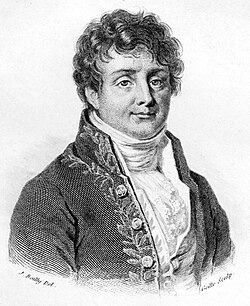
Joseph Fourier
A signal can be made from sinusoidal parts
\(y(t)=\sum_j A_j\sin(2\pi f_jt+\phi_j)\)
Amplitude AControls how strong a component is.
Frequency fControls cycles per unit time.
Phase ϕShifts the component through time; magnitude need not change.
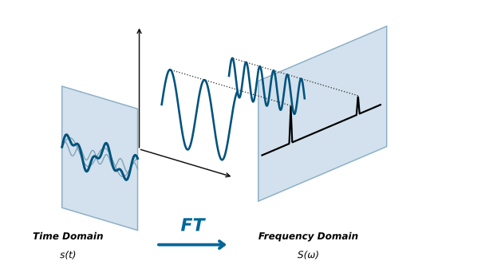
Lab: a Fourier magnitude spectrum
Dominant frequency—
Peak magnitude—
Frequency-selective filtering
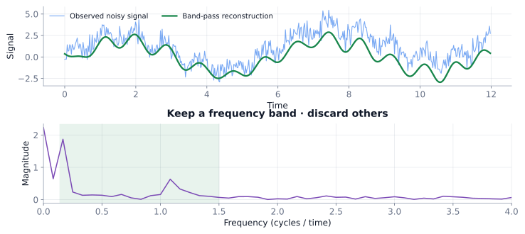
Remove unwanted bands, but beware of losing slow biological trends or fast clinically meaningful transients.
The measurement system can blur hidden events
Convolution: an instrument response shapes what we see
\(y(t)=(x*h)(t)+\varepsilon(t)\)
Hidden input xA neural impulse or narrow chromatographic peak.
Response hA slower hemodynamic or instrument impulse response.
Observed yOverlapping, blurred responses plus noise.
Deconvolution: reconstruct, never magically undo
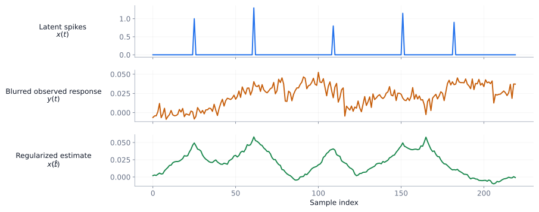
Regularization is required because division by a near-zero Fourier component amplifies noise. Exact millisecond timing cannot generally be recovered from a slow fMRI signal.
Survival analysis
Part IV
Survival analysis
We now see how lifetime expectancy can be estimated.
A different time question: time until an event
EventDeath, relapse, adverse effect, or another defined endpoint.
Start timeDiagnosis, first dose, randomization or enrollment.
ComplicationSome people have not had an event by their last known follow-up.
Survival analysis is about time to event, not necessarily death.
Censoring differs from truncation
Mechanism
What is known?
Right censor
Event time exceeds the final observation time. We only know the event time is greater than the last known check.
Left censor
Event happened before the first reliable observation.
Interval censor
Event happened in between two inspection or check-in times, rather than at a precise timestamp.
Left truncation
Observations below a certain threshold are left out of the sample.
Right truncation
Observations above a certain threshold are excluded from the dataset.
Censoring is partial information: the subject is included in the study, but the exact time of the event is unknown; we only know that the event happened within a certain range or relative to a specific point.
With truncation, data points outside a specific range are completely excluded from the dataset; if an observation is truncated, we do not even know it exists.
What timelines actually look like
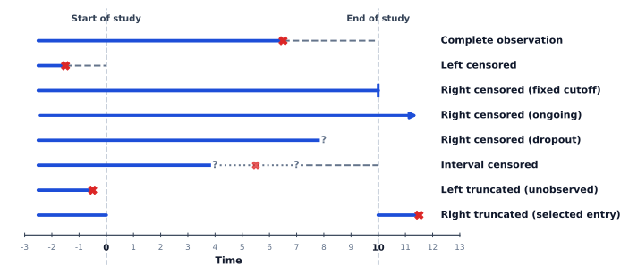
Cross: observed event; tick: right censor; other rows show differing information/selection mechanisms.
Survival\(S(t)\): Probability event time is later than \(t\).
CDF\(1-S(t)\): Probability the event has occurred by \(t\).
Hazard\(h(t)\): An instantaneous conditional event rate (probability density), not a probability.
Intuition: While the survival function tells us the probability of making it past a certain point, the hazard function tells us how intense the danger is at that moment, given that we have survived up to that moment.
Hazard can rise, fall, or stay constant
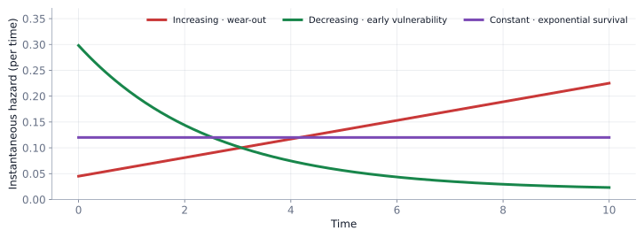
Illustrative mechanisms: wear-out, early vulnerability, and memoryless exponential survival.
The area under survival measures time
\(E[T]=\int_0^\infty S(t)\,dt\)
Mean or expected survival time is life expectancy.
With incomplete follow-up, restricted mean survival time (RMST) integrates only to a prespecified horizon \(\tau\).
SurvivalHow much of the population remains event-free?
HazardHow intense is the instantaneous event rate?
Survival curves can also be modeled parametrically
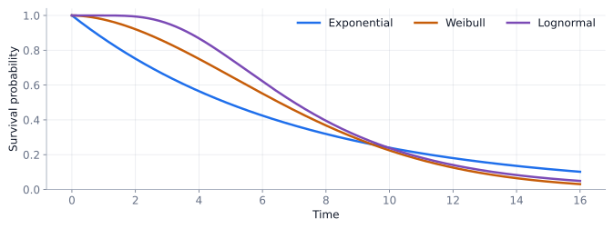
Different distributions imply different time-dependent hazards. Model choice is substantive, not decorative.
Baseline hazardTime-changing hazard at the reference covariate profile.
Exponential multiplierCovariates multiply the instantaneous hazard.
Primary assumptionCovariate hazard ratios are constant over time in a proportional-hazards model.
David Cox
Same changing baseline; different hazard multipliers
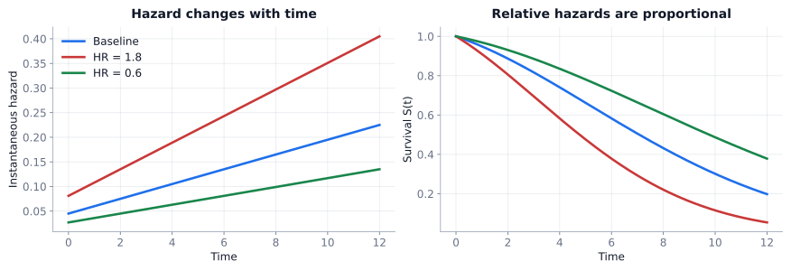
Hazard ratio 1.8 means 80% higher instantaneous hazard (at a given time), not 80% higher probability of an event.
Baseline hazard \(h_0(t)\): general instantaneous hazard, applies to reference covariate profile
Hazard ratio \(e^{\beta_i}\): \(+1\) unit increase in \(x_i\) multiplies baseline hazard by this much.
Proportional hazards assumption: if smoking increase instantaneous hazard by 2× at 40 years of age, it must also increase it by 2× at 60 years of age. The absolute amount of danger may change over time if baseline hazard changes, but the relative difference between the groups is locked in parallel.
What if proportional hazards fails?
CheckCurves and diagnostics may suggest time-varying effects.
AlternativesTime-varying coefficients, stratified Cox, or accelerated failure-time models.
ScopeThese are honorable mentions; learn the interpretation of HR and KM first.
Prediction
Part V
Prediction
We now see how data can enable us to predict missing values.
Missing values: fit the observed, then predict
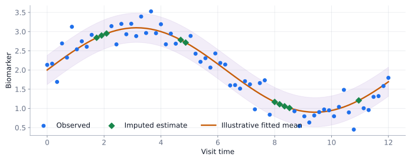
Predictions are estimates, not newly observed patient measurements. Imputation uncertainty must be represented for formal inference.
No simple formula for the response curve?
Gaussian-process regression
A function priorWe describe possible response curves with a mean and covariance kernel.
Nearby experimentsCan be more similar under a smooth kernel; different kernels encode different beliefs on smooth/jagged/periodic functions.
PosteriorEach new measurement updates both mean prediction and uncertainty.
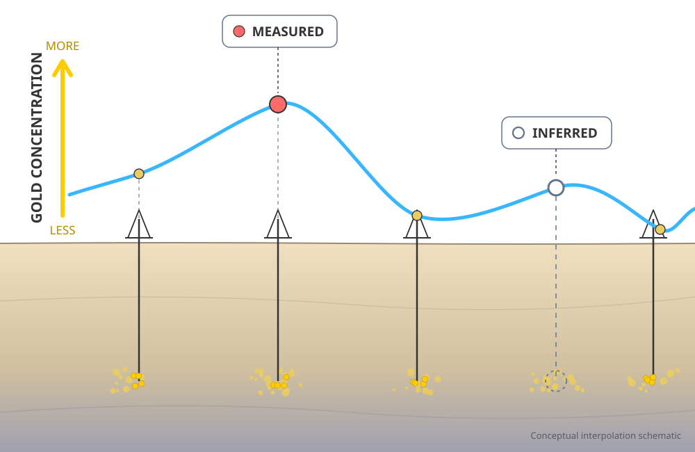
Danie G. Krige
Jonas Mockus
Lab: the next experiment reduces uncertainty
Click anywhere within the plot to sample that experimental condition. Synthetic truth is visible faintly as a teaching aid; an experimenter would not know it.
Samples—
Latest sample—
Suggested x—
Prediction can help plan the next experiment
ExploreSample where uncertainty is largest.
ExploitSample where predicted outcome is promising.
BalanceAn acquisition function scores where the next measurement may be most useful.
This is the intuition behind Bayesian optimization. It is not guaranteed to find the optimum from a handful of observations.
What if the process moves between discrete states?
Nosocomial infection example
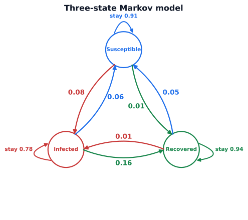
A Markov model represents transition probabilities among susceptible, infected and recovered states. Arrows are illustrative daily probabilities.
Starting distribution\(\boldsymbol\pi_0=(1,0,0)\): all initially susceptible.
Next day\(\boldsymbol\pi_1=\boldsymbol\pi_0 \mathbb{P}\).
Long runIf the chain is irreducible and aperiodic, distributions converge to a stationary vector.
A tiny Markov model can even generate text
TrainingCount which word follows which in a small public-domain-style toy vocabulary.
GenerationDraw each next token using the transition probabilities of the current token.
LimitLocal transitions are not genuine understanding or long-context language modeling.
Sample Training Verses
the soft night holds the silver starsthe silent river follows the moonthe green river hears the distant rainthe stars rest above the sleeping gardena soft wind crosses the open fieldnight draws a curtain over the riverthe distant hills remember summer lightsoft shadows follow quiet footstepsriver water gathers beneath the moonthe night folds around the quiet starsstars in the river move with the tidethe wind whispers through the silver treessoft light returns beyond the hillsthe river carries echoes of the nightgreen leaves sway when the wind wakesthe sleeping garden waits for morning light
Lab: a very small text generator
Offline miniature transition table only; not trained on 1,000 actual poems or on proprietary text.
Tokens—
Unique words—
Generated Verse
Select a starting word and generate.
The common framework
What is changing?
Method introduced
Crucial caution
Repeated values
Longitudinal summaries / correlation
Do not treat every visit as independent
Signal shape
Smoothers / frequency analysis
Removing noise can also remove signal
Time to event
Kaplan–Meier / Cox
Censoring and hazard ≠ probability
Unknown response function
Gaussian process
Kernel assumptions control prediction
Discrete evolving states
Markov chain
Current-state sufficiency is an assumption
Exercise 1: the repeated-measures trap
Blood pressure is recorded six times per patient. Which analysis is invalid if it ignores within-person dependence?
Choose one response.
Exercise 2: a time-to-event misconception
At month 6, a subject has not had the event but leaves the study. In a standard KM analysis they are…
Choose one response.
Exercise 3: the wrong interpretation
Cox regression reports HR = 1.5. Which statement is best?
Choose one response.
Exercise 4: what does more data buy?
Why can a new Gaussian-process measurement be particularly useful near an unsampled region?
Choose one response.
Week 11 in one sentence
Model what time does to dependence, uncertainty, event occurrence, and prediction.
TrajectorySummarize intelligently
DependenceRespect correlation
SurvivalHonor censoring
PredictionShow uncertainty
Next: Week 12
From structured models to learning from many variables
Multivariate structurePrincipal components, factors and clustering.
PredictionGeneralization, validation and model capacity.
Machine learningA wider collection of methods, not a replacement for statistical reasoning.
The last week asks: when patterns are high-dimensional, how can models learn without fooling us?